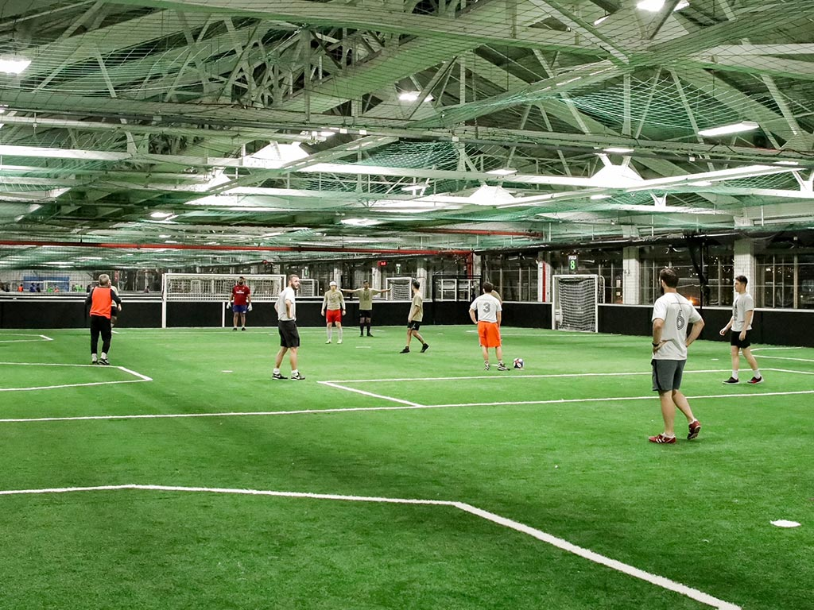
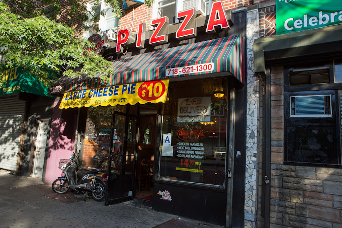

Some of my favorite Spots:
|  | Soccer Roof | Indoor soccer fields that some of middle school friends and I would rent out over long weekends. Always started off casually but would always end up with everyone's faces red and some kid swearing his goal should've counted. After we'd get talk for hours at some old rundown |
|---|---|---|
| Brooklyn Bridge | Use to go here a lot over the summer because of how close to the piers it is. We would spend entire days going from the piers, to the park, to sit by the water, to get something to eat, then back to the piers and repeat. Sucks that Dumbo is super gentrified and everything is overly expensive. | |
|  | Verona on the Grill | Used to stop by here all the time after school when I lived in Borough Park. After a while the older cashier started giving me an extra slice if the front counter was ever empty. It probably still is my favorite pizza spot in Brooklyn. |